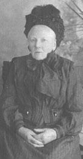

| Follow the above link to the main page for this topic or click the graphic below to visit the Homepage. |
 | Photo Gallery: "The Lady of Nottingham" (unknown Cullen relative) The Scherer Family History Collection |
 |
This photo (which has been cropped) shows an unknown relation of the Cullen family that lived in Nottinghamshire. The date, written on the back of the photo, is 6/1/14. Since this photo came from the same collection as the photos of Seth Cullen and family, it was likely sent to Seth's son William from England. Handwriting on the back states that the subject had previously become ill at the photographers and that she is sending the best of the subsequently taken pictures. The studio was Roman's Electric Studios, 10, Albert Street, Nottingham. This photo was also published in the Nottinghamshire Family History Journal. Despite the distribution of the photo through the journal, the woman's identity and connection to the Cullen family remains unknown. Use Back Button to Return. |